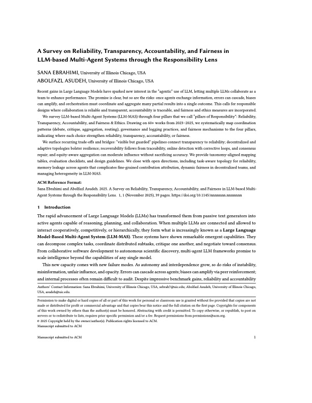

A Survey on Reliability, Transparency, Accountability, and Fairness in LLM-based Multi-Agent Systems through the Responsibility Lens

As large language models evolve from standalone assistants into teams of interacting agents, the main challenge is no longer just capability. The harder question is how to design these systems so they remain dependable, understandable, and ethically grounded even when multiple agents critique, debate, route tasks, and aggregate partial results.
This survey makes a foundational contribution by introducing what is, to our knowledge, the first unified taxonomy of responsibility in LLM-based multi-agent systems. Rather than treating concerns such as reliability, transparency, accountability, and fairness as separate conversations, the paper brings them together into one coherent framework for evaluating how multi-agent LLM systems are actually built.
Under this responsibility lens, the survey organizes the literature into four pillars: reliability, covering accuracy, robustness, recoverability, and resilience; transparency, including explainability, interpretability, uncertainty reporting, limitations, and reproducibility; accountability, through traceability, attribution, auditability, and influence analysis; and fairness and ethics, including equity, diversity, and value alignment. Reviewing more than sixty recent systems, the paper shows where current approaches fit this framework, where they only partially address it, and where the field still lacks real foundations.
Beyond synthesizing prior work, the paper offers a cleaner conceptual lens for researchers working on agentic LLMs, safety, evaluation, and coordination. It clarifies which design choices genuinely strengthen responsible behavior, surfaces the trade-offs that remain unresolved, and points to research directions that could materially move the field forward.
Citation: Sana Ebrahimi and A. Asudeh. 2025. A Survey on Reliability, Transparency, Accountability, and Fairness in LLM-based Multi-Agent Systems through the Responsibility Lens. Preprint.